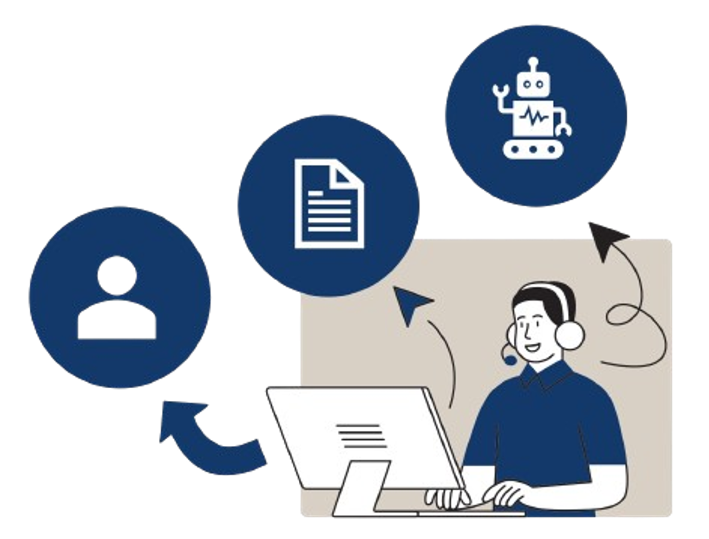

CLIENTE |
Qual a diferença de bloqueio financeiro e bloqueio de vendas? | Bloqueio Financeiro/Marcado para Eliminação: Quando um cliente está inativo por mais de 2 anos, nosso sistema realiza automaticamente o bloqueio financeiro a nível de empresa. Isso significa que o cliente é marcado para eliminação, e não poderá realizar transações até que a situação do cadastro seja revisada. Bloqueio de Vendas: Este tipo de bloqueio é gerido exclusivamente pela equipe da GB. A equipe OMD-LA não tem permissão para desbloquear clientes que estão com bloqueio de vendas. |
| TDT x obrigatoriedade | Após o início do projeto Rocket TDF (Tax Declaration Framework), a inclusão da informação sobre o TDT (Tipo de Tributação) se torna obrigatória. A partir desse momento, é necessário fornecer o TDT para validar e atualizar as solicitações de extensão de clientes. | |
| Quais são os requisitos mínimos para cadastro de dados bancários? | Para cadastrar os dados bancários, é necessário fornecer uma carta com os seguintes requisitos obrigatórios: Formato Não Modificável: PDF ou JPEG. Legibilidade: A carta deve ser claramente legível. Assinatura e Data: A carta deve estar assinada e datada. Validade: A carta tem validade de 6 meses. Além disso, os dados bancários devem corresponder ao mesmo CNPJ/CPF cadastrado na Bosch para evitar rejeição de pagamentos. |
FORNECEDOR |
Qual a diferença de bloqueio financeiro e bloqueio de compras? | Bloqueio financeiro de fornecedor, significa que o fornecedor está inativo há mais de 2 anos. Bloqueio de compras – É efetuado pelo comprador, ou seja, OMD-LA não possui permissão para este desbloqueio. |
| Como identificar a empresa? | Verifique a organização de compras para a qual a compra está sendo realizada. | |
| O que é 908C? | 908C refere-se a compras que não se encaixam nos escopos padrão e, portanto, precisam ser tratadas de forma especial. |
Angelica Prawutzki
(GS/OBC-LA1 GS/OMD-LA)
Milena Vieira
(GS/OMD-LA)
Mayara Cruz
(GS/OMD-LA)